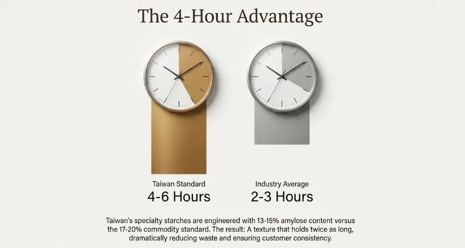
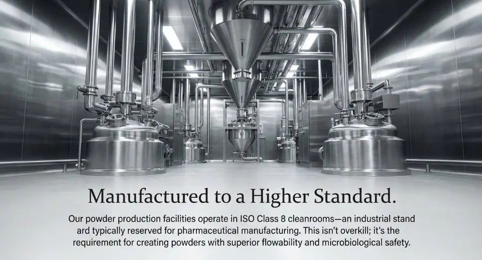
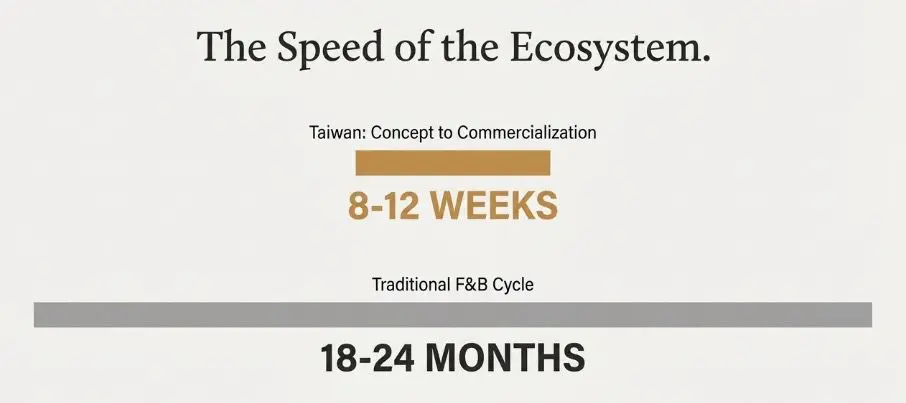
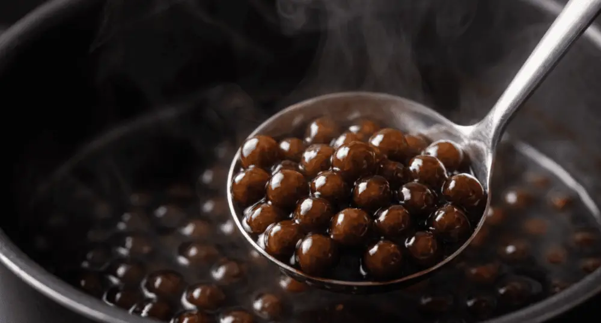

Articles / Tips & trends
Why Source Bubble Tea Ingredients from Taiwan? Quality and Innovation Benefits
2025-12-16 · Industry Trends, Industry Trends

Original public content from Yen Chuan. Product claims and specifications remain subject to confirmation by the company.
When Taiwan’s food scientists developed modified tapioca starch that maintains texture integrity through freezing cycles in 2018, the global bubble tea supply chain took notice. This wasn’t just another incremental improvement—it represented the kind of fundamental ingredient innovation that Taiwan’s food technology ecosystem has been delivering for four decades. The island nation supplies an estimated 70% of the world’s bubble tea ingredients, but the real story isn’t about market share. It’s about how Taiwan’s unique convergence of food science expertise, agricultural resources, and regulatory rigor creates ingredients that consistently outperform alternatives in functionality, safety, and innovation velocity.
The question isn’t whether to source from Taiwan—it’s understanding the technical advantages that make Taiwan-sourced ingredients the foundation of quality bubble tea operations worldwide. From processing standards that exceed FDA requirements to customization capabilities that enable proprietary formulations, Taiwan’s ingredient manufacturers operate at the intersection of food science and commercial viability. What looks like a straightforward sourcing decision is actually a strategic choice about ingredient performance, supply chain reliability, and access to continuous innovation.
The Food Science Foundation: Why Taiwan’s Ingredients Perform Differently
Taiwan’s advantage in bubble tea ingredients stems from three decades of focused R&D investment in starch modification, flavor encapsulation, and texture engineering. When you examine tapioca pearl formulations at the molecular level, Taiwanese-manufactured products demonstrate superior gelatinization characteristics and retrogradation resistance compared to alternatives from other regions. This isn’t marketing speak—it’s measurable in differential scanning calorimetry and texture analyzer results.
The technical superiority begins with raw material processing. Taiwan sources cassava from specific cultivars selected for amylopectin-to-amylose ratios that optimize chewiness and freeze-thaw stability. Where commodity tapioca starch typically contains 17-20% amylose, Taiwan’s specialty bubble tea starches are engineered to 13-15% through cultivar selection and processing controls. That 4-5 percentage point difference translates to pearls that maintain texture for 4-6 hours post-cooking versus 2-3 hours for standard formulations—a critical advantage for commercial operations managing labor costs and product consistency.
Beyond starch chemistry, Taiwan’s ingredient manufacturers have mastered the art of clean-label formulation without sacrificing functionality. While many international suppliers rely on modified food starches (E1414, E1442) to achieve desired texture, Taiwanese producers have developed proprietary processing techniques that deliver equivalent performance using native starches and natural hydrocolloids. The result? Ingredient labels that resonate with today’s consumers while maintaining the texture and shelf stability operators demand. This clean-label innovation didn’t happen by accident—it emerged from years of collaboration between Taiwan’s food science universities and commercial manufacturers, a partnership model that accelerates ingredient innovation.


Processing Standards: The Quality Infrastructure Behind Taiwan’s Ingredients
When we discuss sourcing quality, we’re really talking about manufacturing infrastructure and regulatory oversight. Taiwan’s food processing facilities operate under standards that meet or exceed FSSC 22000 certification requirements, with many facilities maintaining additional ISO 22000 and HACCP certifications. More importantly, Taiwan’s FDA equivalent (the Taiwan Food and Drug Administration, TFDA) enforces testing protocols that go beyond basic food safety to include detailed specifications for texture parameters, color stability, and sensory characteristics.
Consider the manufacturing environment for syrups and flavored powders. Taiwan’s facilities maintain cleanroom classifications of ISO Class 8 or better for powder production—industrial standards typically reserved for pharmaceutical manufacturing. This isn’t overkill; it’s a response to the technical challenges of producing hygroscopic powders that must maintain flowability, dispersibility, and microbiological safety throughout global supply chains. The result? Flavor powders that don’t clump in high-humidity environments and syrups that maintain viscosity consistency across temperature variations—performance attributes that directly impact operational efficiency and drink quality.
Taiwan’s quality infrastructure extends to supplier verification and traceability systems that put most international food manufacturing to shame. Every batch of ingredients carries complete documentation tracing back to raw material sourcing, including origin verification for natural flavors, pesticide residue testing for botanical extracts, and heavy metal analysis for imported sugars. This level of traceability isn’t just regulatory compliance—it’s technical due diligence that ensures ingredient functionality and safety.


Innovation Velocity: How Taiwan’s R&D Ecosystem Accelerates Product Development
Taiwan’s true competitive advantage lies in its innovation ecosystem—a tight network of ingredient manufacturers, equipment suppliers, food science departments, and commercial operators that collaborate to solve technical challenges in real time. When brown sugar boba emerged as a global trend in 2018, Taiwanese ingredient companies had commercial-ready brown sugar syrups and coating systems available within 8-12 weeks. Compare that to typical product development cycles of 18-24 months in traditional food manufacturing, and you begin to understand Taiwan’s innovation velocity advantage.
This rapid development capability stems from Taiwan’s concentration of bubble tea expertise. When a manufacturer identifies a technical challenge—say, maintaining popping boba structural integrity in alcohol-based beverages—they can consult with food science departments at National Taiwan University or National Chung Hsing University, collaborate with hydrocolloid suppliers, and pilot formulations at commercial scale within the same geographic region. The feedback loops are measured in days and weeks, not months and quarters.
Recent innovations highlight this ecosystem advantage. Taiwan was first to commercialize freeze-resistant boba that maintains texture integrity in frozen applications, opening new product categories in ice cream and frozen desserts. The technical breakthrough required modifying starch networks with specific ratios of gums and stabilizers while maintaining clean-label status—the kind of complex formulation challenge that benefits from rapid iteration and technical collaboration. Similarly, Taiwan led the development of instant pearls that rehydrate in cold water, solving a critical operational challenge for grab-and-go applications and vending machines.
The innovation pipeline extends beyond ingredients to packaging and processing technologies. Taiwan’s ingredient suppliers were early adopters of nitrogen flushing for powder packaging, extending shelf stability from 6 months to 18 months without preservatives. They pioneered portion-control formats for concentrated syrups, reducing waste and improving consistency. These seem like incremental improvements until you calculate their impact on supply chain economics and product quality—then they become strategic advantages.


The Taiwan Ingredient Ecosystem: Key Technical Capabilities
| Technical Capability | Taiwan Standard | Industry Average Impact |
|---|---|---|
| Tapioca Starch Modification | Amylose content control ±0.5% | Texture consistency: 4-6 hr vs 2-3 hr |
| Flavor Encapsulation | Microencapsulation efficiency >85% | Heat stability: 95°C vs 75°C |
| Clean Label Formulation | Native ingredients achieve modified starch performance | Label claims without functionality compromise |
| Processing Environment | ISO Class 8 cleanrooms for powders | Powder flowability and microbial safety |
| R&D Cycle Time | Commercial products in 8-12 weeks | 6-18 months faster than industry standard |
Regulatory Compliance: Taiwan’s Advantage in Global Market Access
Here’s a technical consideration that often gets overlooked: Taiwan-manufactured ingredients typically clear regulatory approval faster in multiple markets because Taiwan’s food safety standards align with both FDA and EFSA frameworks. When Taiwan’s manufacturers export to the US, EU, or Asia-Pacific markets, their baseline compliance with TFDA requirements means they’re already 80-90% compliant with destination country regulations. This regulatory alignment translates to faster SKU approval, reduced testing costs, and lower risk of supply chain disruptions due to compliance issues.
Taiwan’s ingredient manufacturers maintain documentation in English, Chinese, and often Japanese, simplifying the technical review process for international customers. They provide comprehensive certificates of analysis, allergen statements, GMO status declarations, and halal/kosher certifications as standard practice—not special requests. This regulatory sophistication reflects decades of export experience and a business culture that treats compliance as competitive advantage rather than administrative burden.
Cost-Performance Calculus: Understanding Taiwan’s Value Proposition
The conversation about Taiwan sourcing often stalls on price comparisons, but that analysis misses the total cost equation. Yes, Taiwan-manufactured ingredients typically carry 15-25% higher unit costs compared to Chinese or Southeast Asian alternatives. However, when you account for functional performance, Taiwan’s value proposition becomes compelling.
Consider tapioca pearl yield: Taiwan-manufactured pearls typically achieve 95-98% usable yield post-cooking with consistent texture, while commodity alternatives often see 75-85% yield due to breakage, inconsistent texture, and batch variability. That 10-20 percentage point yield difference more than compensates for higher unit costs, especially when you factor in reduced labor costs from less culling and reprocessing.
Or examine syrup performance: Taiwan’s concentrated syrups maintain viscosity and flavor profile through multiple temperature cycles, enabling precise portion control via automated dispensing systems. Lower-cost alternatives often require manual dispensing due to viscosity inconsistency, increasing labor costs and reducing drink-to-drink consistency. The total cost advantage of Taiwan ingredients emerges when you analyze the full operational picture—not just purchase price.

Supply Chain Reliability: The Infrastructure Advantage
Taiwan’s ingredient supply chain infrastructure represents another underappreciated technical advantage. The island’s ports handle containerized cargo with efficiency that rivals Singapore and Hong Kong, ensuring reliable shipping schedules critical for inventory planning. Taiwan’s manufacturers maintain buffer stock and offer flexible minimum order quantities that accommodate both small operators and enterprise accounts—a flexibility enabled by domestic market depth that ensures production runs maintain economic efficiency even with smaller export orders.
More critically, Taiwan’s manufacturers have proven supply chain resilience. During COVID-19 disruptions, when many global ingredient suppliers faced 8-12 week delays and force majeure declarations, Taiwan’s bubble tea ingredient manufacturers maintained 2-3 week lead times and honored existing contracts. That reliability emerged from diversified raw material sourcing, domestic production capacity, and logistics partnerships that provided routing alternatives when shipping disruptions occurred.
The Technical Services Differentiator
What often tips sourcing decisions toward Taiwan isn’t just ingredient quality—it’s technical support capability. Taiwan’s ingredient manufacturers employ food scientists who provide formulation assistance, troubleshoot processing challenges, and collaborate on custom product development. Need to adjust a flavor profile to complement local water mineral content? Taiwan’s suppliers have encountered that challenge dozens of times and can recommend specific adjustments. Experiencing texture inconsistency with a new equipment installation? They’ll send technical staff to evaluate your production process and identify root causes.
This technical service culture reflects Taiwan’s origin as a bubble tea innovating market where ingredient suppliers and operators collaborate intensively. The expertise developed serving Taiwan’s sophisticated domestic market transfers directly to international customers as professional manufacturing services. When you source from Taiwan, you’re not just buying ingredients—you’re accessing four decades of accumulated bubble tea knowledge embedded in supplier organizations.
The Sourcing Decision: Technical Considerations Beyond Price
When operators evaluate Taiwan versus alternative sourcing origins, the decision framework should center on ingredient performance, supply chain reliability, and innovation access—not just purchase price. Taiwan-sourced ingredients deliver measurable advantages in texture consistency, flavor stability, and functional performance that translate to operational efficiency and product quality. The question isn’t whether Taiwan ingredients cost more—it’s whether the performance differential justifies the investment. For operators prioritizing quality differentiation and operational consistency, Taiwan sourcing becomes the obvious choice.
The market reality is straightforward: Taiwan invented bubble tea, refined its ingredients through decades of technical iteration, and continues leading ingredient innovation globally. That history matters because it represents accumulated expertise that newer ingredient manufacturers can’t replicate quickly. When you source bubble tea ingredients from Taiwan, you’re leveraging the world’s deepest concentration of bubble tea technical knowledge—an advantage that compounds as your operation scales and your menu complexity increases.
FAQ
Taiwan has 40 years of specialized food science expertise in starch modification and texture engineering. Taiwanese tapioca starches feature precise amylopectin-to-amylose ratio control (13-15%), enabling pearls to maintain optimal texture for 4-6 hours post-cooking versus 2-3 hours for standard formulations. Taiwan suppliers use clean-label formulation techniques without chemical modified starches.
Taiwan manufacturers typically maintain FSSC 22000, ISO 22000, and HACCP certifications. Production facilities operate at ISO Class 8 cleanroom standards (pharmaceutical-grade) ensuring microbiological safety. Taiwan’s FDA equivalent (TFDA) enforces testing protocols covering texture parameters, color stability, and sensory characteristics. Every batch includes complete traceability documentation and certificates of analysis.
Taiwan suppliers achieve commercial-ready product development in 8-12 weeks, compared to typical 18-24 month cycles in traditional food manufacturing. This rapid innovation stems from Taiwan’s concentrated ecosystem where ingredient manufacturers, equipment suppliers, and food science universities collaborate within the same geographic region. Technical challenges are resolved through university partnerships, with pilot formulations completed within weeks.
Taiwan-manufactured ingredients typically cost 15-25% more than Chinese or Southeast Asian alternatives but deliver superior total cost performance. Taiwan pearls achieve 95-98% usable yield post-cooking versus 75-85% for commodity alternatives. This yield difference compensates for higher unit costs. Taiwan’s concentrated syrups maintain viscosity stability enabling automated dispensing, reducing labor costs and improving drink consistency.
Taiwan’s port infrastructure delivers containerized cargo efficiency rivaling Singapore, ensuring reliable shipping schedules. Suppliers maintain buffer stock and flexible minimum order quantities (MOQ) for all customer sizes. During COVID-19 when global suppliers faced 8-12 week delays, Taiwan manufacturers maintained 2-3 week lead times and honored contracts. Supply chain resilience comes from diversified raw material sourcing and domestic production capacity.
Sources & References
- Cornell Food Science Department — Starch chemistry and gelatinization research
- UC Davis Food Science & Technology — Texture analysis methodologies and sensory science
- USDA Economic Research Service — Global cassava trade and processing industry data
- Institute of Food Technologists (IFT) — Food safety standards and clean label formulation guidelines
- FDA Food Safety Modernization Act (FSMA) — International food safety regulatory frameworks
About the Author
Dr. Emily Chen is Senior R&D Advisor at YenChuan, specializing in ingredient functionality and product development for the beverage industry. With 15 years of experience in food science research and commercial applications, she brings deep technical expertise to bubble tea ingredient innovation. Having worked in both academic research and commercial manufacturing environments, Dr. Chen understands how ingredient chemistry translates to operational performance—a perspective she applies daily helping customers optimize formulations and solve technical challenges.
Connect with YenChuan on LinkedIn.
Partner With Taiwan’s Leading Ingredient Innovators


Quality ingredients aren’t a commodity decision—they’re a strategic advantage that defines your product differentiation and operational efficiency. YenChuan has been crafting premium bubble tea ingredients in Taiwan since 1998, combining food science expertise with deep market knowledge to deliver ingredients that perform consistently across diverse operating environments.
Whether you’re formulating a new signature drink, scaling to multi-unit operations, or solving specific technical challenges, our food science team brings decades of bubble tea ingredient expertise to your operation. We don’t just supply ingredients—we collaborate on formulation optimization, provide technical troubleshooting, and deliver custom solutions that address your unique requirements.
Ready to experience the Taiwan ingredient advantage? Book a consultation with our technical team →